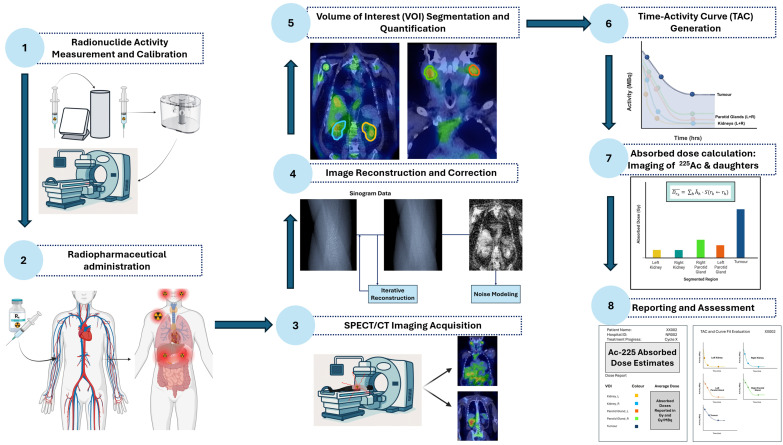
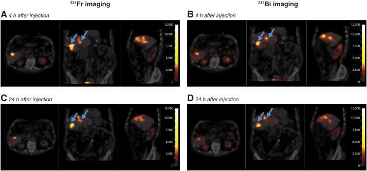
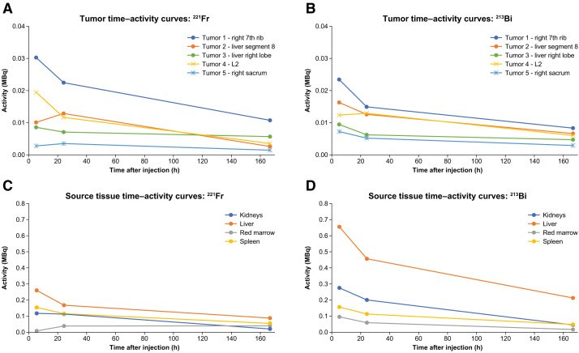

1711 — Dosimetry cá thể hóa cho ²²⁵Ac: đo liều u – thận – tủy, hiệu chỉnh tái phân bố hạt nhân con và ngưỡng dừng / Individualised dosimetry for actinium-225 targeted alpha therapy
Tags: pattern:xa-tri-hat-alpha pattern:dosimetry pattern:doc-than pattern:doc-tuy vung:than vung:tuy-xuong vung:tuyen-nuoc-bot score:RBE protocol:SPECT-CT protocol:dosimetry incidentaloma:khong
Mức chắc chắn (certainty): tổng hợp y văn (literature synthesis) — tự biên từ 1 phân tích dosimetry của thử nghiệm pha 1b/3 ACTION-1 ([²²⁵Ac]Ac-DOTATATE, 9 bệnh nhân × 4 chu kỳ, PMC13435548), 1 tổng quan phương pháp dosimetry ảnh cho ²²⁵Ac (PMC12838896), 1 nghiên cứu khả thi SPECT ²²⁵Ac-PSMA ở 4 bệnh nhân mCRPC (PMC12858698), 1 nghiên cứu tiền lâm sàng xác định cơ quan giới hạn liều (PMC13106407) và 2 tổng quan vật lý chọn đồng vị (PMC13610509, PMC12985603). Chưa có ngưỡng dừng tiền cứu nào được xác nhận — phần ngưỡng dừng ghi rõ là suy luận từ số liệu chu kỳ, không phải khuyến cáo cấp 1.
Câu chốt: với ²²⁵Ac, hoạt độ tiêm không dự báo được liều — 4 hạt alpha đi qua 6 mắt xích phân rã, giật lùi hạt nhân (recoil) 100–200 keV có thể bứt hạt nhân con khỏi chelator, và ta không chụp được chính ²²⁵Ac mà chỉ chụp ²²¹Fr (218 keV, 11,4%) và ²¹³Bi (440 keV, 25,9%). Vì vậy "100 kBq/kg" chỉ là điểm khởi đầu, còn quyết định dừng/tiếp phải dựa trên liều hấp thụ có trọng số RBE (Gy RBE=5) cho u, thận và tủy xương đỏ — với 2 mốc tham chiếu thực tế: thận 22,3 Gy và tủy 1,1 Gy sau 4 chu kỳ ở ACTION-1 (PMC13435548).
1. Tổng quan bệnh học – cơ chế hình ảnh
- Vì sao ²²⁵Ac khó đo liều hơn ¹⁷⁷Lu (vật lý, không phải kỹ thuật):
- Chuỗi phân rã 6 mắt xích: ²²⁵Ac (T½ 9,92 ngày) → ²²¹Fr (4,8 phút) → ²¹⁷At (33 ms) → ²¹³Bi (45,6 phút) → ²¹³Po (4,2 µs, 28,9% năng lượng) / ²⁰⁹Tl (2,2 phút, 0,2% năng lượng) → ²⁰⁹Pb (0,7%) → ²⁰⁹Bi bền. Tổng cộng 4 hạt alpha, 2 hạt beta, 2 photon cho mỗi phân rã ²²⁵Ac.
- Giật lùi hạt nhân 100–200 keV đủ phá liên kết hóa học và bứt hạt nhân con khỏi chelator (PMC12838896). Nếu hạt nhân con rời u → liều vào thận/tủy, và liều u không còn suy ra được từ hoạt độ tiêm.
- Hình ảnh chỉ là "gián tiếp": ²²⁵Ac không có photon dùng được; ta chụp ²²¹Fr 218 keV (11,4%) làm đại diện cho ²²⁵Ac và ²¹³Bi 440 keV (25,9%) làm đại diện cho các hạt nhân con phía sau. Hoạt độ tiêm thường chỉ 4–8 MBq → thống kê đếm kém, đòi hỏi chuẩn hóa camera và hiệu chỉnh thể tích riêng phần (PVE).
- RBE ≈ 5 (MIRD Pamphlet 22): hạt alpha có LET ~80 keV/µm, quãng chạy 40–100 µm — cùng một "Gy" không cùng hiệu ứng sinh học với tia x. Vì vậy mọi liều phải ghi Gy RBE=5, và RBE thực có thể khác theo mô (phụ thuộc khả năng sửa đứt sợi đôi) — "chưa rõ" RBE đúng cho từng mô.
- TẠI SAO phải đo liều thay vì dùng hoạt độ cố định: trong ACTION-1, cùng 4 chu kỳ × 10,2 MBq (tổng 31,67 ± 6,57 MBq, 21,1–42,5 MBq), liều hệ số RBE=5 là:
- Thận: 519,8 ± 224,7 mGy/MBq (chu kỳ 1) → 575,2 ± 352,6 mGy/MBq (chu kỳ 4) — tăng nhẹ, và tổng 4 chu kỳ = 22,3 Gy.
- Tủy xương đỏ: 28,6 ± 12,1 → 24,6 ± 14,1 mGy/MBq — tổng 1,1 Gy.
- Gan: 453,6 ± 279,5 → 415,4 ± 220,7 mGy/MBq; lách: 882,2 ± 424,4 → 862,5 ± 281,4 mGy/MBq.
- U (40 tổn thương, 25 ở chu kỳ 1 + 15 ở chu kỳ 4): 488–8.775 mGy/MBq, tức 0,49–8,78 Gy/MBq — biên độ 18 lần giữa các u. 10 u thấy ở chu kỳ 1 không còn thấy ở chu kỳ 4; phần lớn u có liều giảm ở chu kỳ 4.
- Đối chiếu có ý nghĩa lâm sàng: 4 chu kỳ ¹⁷⁷Lu-DOTATATE 7,4 GBq cho thận 19,4 Gy và tủy 1,0 Gy. Nghĩa là ²²⁵Ac ở liều đang thử nghiệm cho liều thận/tủy TƯƠNG ĐƯƠNG ¹⁷⁷Lu, nhưng liều u cao hơn nhiều lần — đây chính là lý do "alpha mạnh hơn" không đồng nghĩa "độc hơn".
- Vì sao cơ quan giới hạn liều thay đổi theo vector (không phải theo đồng vị):
- ²²⁵Ac-DOTATATE: thận và tủy là cơ quan giới hạn (số ACTION-1 ở trên); ²¹³Bi chủ yếu ở lại u cùng DOTATATE, chỉ một phần nhỏ đi thận — bằng chứng: thời gian lưu (residence time) của ²¹³Bi ở thận 3,76 giờ so với ²²¹Fr 2,10 giờ, trong khi ở u ²¹³Bi không cao hơn ²²¹Fr (PMC13435548). Điều này làm yên tâm giả thuyết cũ rằng ²¹³Bi tự do dồn vào thận.
- ²²⁵Ac-PSMA: thận vẫn là cơ quan giới hạn thực hành (liều 1,55 ± 0,38 Gy/6,87 MBq, tức 0,23 ± 0,07 Gy/MBq, 4 bệnh nhân mCRPC — PMC12858698), nhưng tuyến nước bọt có thể là cơ quan giới hạn SINH HỌC: trong mô hình chuột, tuyến mang tai nhận 0,56 Gy so với thận 0,29 Gy ở cùng 5 kBq, và giảm tiết nước bọt > 60% dù thận chỉ tổn thương ống thận nhẹ; tương quan liều–chức năng ρ = 0,776 (PMC13106407). Tỉ lệ u/cơ quan ở người: tủy 14,84 · thượng thận 6,35 · tuyến nước bọt 4,96 · thận 1,55 (PMC12858698).
- Cái gì đo được, cái gì chỉ suy luận: phần ²²⁵Ac + ²¹⁷At giả định cùng phân bố với ²²¹Fr (vì T½ quá ngắn so với thời gian chụp); phần ²¹³Po/²⁰⁹Tl giả định cùng phân bố với ²¹³Bi. Đây là giả định, không phải đo — phải ghi trong báo cáo liều.
2. Mẫu hình + chẩn đoán phân biệt theo vị trí (gamut)
Bài này là bài dosimetry, nên "gamut" là gamut nguyên nhân của một liều bất thường — tức khi liều thận/tủy/u không khớp kỳ vọng thì nghĩ tới đâu.
- Mẫu hình 1 — liều thận cao bất tương xứng với hoạt độ tiêm: (a) hạt nhân con rời chelator (recoil) → ²¹³Bi tự do vào thận; (b) chelator kém bền (DOTA với ²¹³Bi có thể mất tới 37% do hiệu ứng chuyển hoán nội — PMC12985603); (c) ống thận tái hấp thu peptide (DOTATATE/PSMA đều qua thận); (d) hiệu chỉnh PVE sai (thận nhỏ, nhiễu).
- Mẫu hình 2 — liều tủy cao: (a) di căn tủy (u trong xương hút thuốc → "tủy" đo được thực ra là u); (b) ²²⁵Ac tự do lưu trong xương; (c) VOI tủy đặt sai (L3–L5 như ACTION-1, nhưng bệnh nhân có di căn cột sống).
- Mẫu hình 3 — liều u thấp dù u bắt thuốc mạnh trên PET: (a) u nhỏ < 2 cm → PVE làm giảm liều biểu kiến; (b) hoại tử trung tâm → hoạt độ phân bố không đều, S-value khối cầu không đúng; (c) u giảm kích thước giữa 2 chu kỳ → không còn VOI để so; (d) bắt thuốc không đồng nhất → liều trung bình che lấp ổ "lạnh".
- Gamut theo vector (bảng chọn cơ quan cần đo):
| Vector | Cơ quan giới hạn chính | Cơ quan phải đo thêm | Dấu hiệu lâm sàng tương ứng |
|---|---|---|---|
| ²²⁵Ac-DOTATATE (NET) | Thận, tủy xương đỏ | Gan, lách | Creatinin/eGFR, CTM |
| ²²⁵Ac-PSMA (mCRPC) | Thận | Tuyến nước bọt (± thượng thận) | Khô miệng, creatinin |
| ²²⁵Ac-antibody | Tủy (T½ dài, phơi nhiễm tủy kéo dài) | Gan | CTM |
| ¹⁷⁷Lu (đối chứng) | Thận, tủy | — |
3. Bảng so sánh phân biệt (ma trận đối chiếu)
| Thực thể / lựa chọn | Đặc điểm định lượng | Chốt vào (rule-in) | Chốt loại (rule-out) | Gợi ý xác nhận |
|---|---|---|---|---|
| Tiếp ²²⁵Ac khi liều thận còn dư địa | ACTION-1: thận 22,3 Gy RBE=5/4 chu kỳ; ¹⁷⁷Lu tương đương 19,4 Gy | Liều thận tích lũy dưới mốc tham chiếu của đơn vị + eGFR ổn định + tủy hồi phục | Liều thận đã chạm mốc + eGFR giảm → không tiếp | SPECT/CT ²²¹Fr + ²¹³Bi, TAC 3 điểm |
| Dừng vì tủy | ACTION-1: tủy 1,1 Gy RBE=5/4 chu kỳ; ¹⁷⁷Lu 1,0 Gy | Giảm ≥ 2 dòng tế bào độ 2–3 + liều tủy tích lũy cao | CTM bình thường + liều tủy thấp → tiếp được | CTM mỗi chu kỳ + VOI tủy L3–L5 |
| Đổi sang ²¹²Pb | T½ 10,63 giờ (²¹²Bi 60,54 phút) vs ²²⁵Ac 9,92 ngày; 1 alpha/chuỗi chính | Vector nhỏ, thải nhanh; cần khớp T½ sinh học ngắn; nguồn ²²⁵Ac khan | Cần phơi nhiễm kéo dài (kháng thể) → ²¹²Pb thải trước khi tới u | Generator ²²⁸Th hoặc ²²⁴Ra/²¹²Pb; đo giữ ²¹²Bi |
| Đổi sang ²²³Ra (chỉ xương) | T½ 11,43 ngày, tự tìm xương, không cần vector | Di căn xương dạng tạo xương, không có đích phân tử | U tạng/không xương → không dùng | Xạ hình xương/SPECT |
| ¹⁷⁷Lu thay vì alpha | T½ 6,65 ngày, LET 0,1–1 keV/µm, cross-fire | U lớn, bắt thuốc đồng nhất, cần cross-fire | U nhỏ/kháng ¹⁷⁷Lu, đã tiến triển → alpha | ¹⁷⁷Lu-PSMA/DOTATATE đã dùng |

Từ chuẩn hóa hoạt độ → chụp SPECT/CT (cửa sổ 218 và 440 keV) → tái tạo/hiệu chỉnh → phân đoạn VOI → đường cong hoạt độ–thời gian → tính liều voxel bằng VSV kernel → báo cáo Gy và Gy/MBq kèm bất định. Nguồn: Ramonaheng K et al., Cancers 2026 (PMC12838896), Fig. 6, CC BY 4.0.Ba "chốt" khác biệt so với dosimetry beta
- Không có "liều trung bình an toàn": hạt alpha không cross-fire — một ổ tế bào không bắt thuốc không được "cứu" bởi tế bào bên cạnh. Vì vậy liều trung bình u có thể đẹp trong khi ổ kháng thuốc vẫn sống.
- RBE không hằng số: dùng 5 theo MIRD 22 là quy ước, không phải hằng số sinh học; báo cáo phải nêu rõ.
- Ngưỡng mô phỏng từ xạ ngoài (EBRT 23 Gy cho thận) KHÔNG chuyển được sang alpha vì khác LET, suất liều và phân bố không gian (PMC12838896).
4. Protocol chụp + hệ phân độ/điểm chuẩn hóa
- Chuẩn bị & hiệu chuẩn:
- Đo hoạt độ bằng dose calibrator hiệu chuẩn riêng cho ²²⁵Ac, đo hoạt độ còn trong bơm/ống tiêm để có hoạt độ thực tiêm.
- Hiệu chuẩn camera–calibrator bằng phantom (ống trụ hoạt độ đều hoặc quả cầu nóng) với cùng protocol chụp bệnh nhân; bắt buộc vì hoạt độ tiêm chỉ 4–8 MBq.
- Chụp (theo ACTION-1, PMC13435548 + tổng quan PMC12838896):
- SPECT/CT, collimator năng lượng cao (HE), 3 cửa sổ: 92 keV (25%), 218 keV ± 20% (²²¹Fr), 440 keV ± 20% (²¹³Bi); 60 projection/đầu, 30 giây/projection (dao động 15–60 projection, 30–210 giây tùy protocol).
- 3 thời điểm: 4 ± 1 giờ, 24 ± 2 giờ, 168 ± 24 giờ sau tiêm — đủ để dựng đường cong hoạt độ–thời gian (TAC); một số protocol dùng 6/24/48/96 giờ (PMC12858698).
- Trường nhìn phủ gan, hai thận, tủy L3–L5, và u trong tầm; VOI u chọn u > 2 cm và bắt thuốc hơn nền ở mọi thời điểm.
- Chụp lại ở chu kỳ 1 và chu kỳ cuối (ACTION-1 chụp chu kỳ 1 và 4) để phát hiện liều u giảm/kidney tăng.
- Tính liều:
- TAC fit một hoặc hai hàm mũ; tích phân hoạt độ → TIAC; liều bằng MIRD S-value (khối cầu theo thể tích u) hoặc voxel S-value (VSV) kernel cho bản đồ liều 3D.
- Nhân RBE = 5 cho phần alpha → báo cáo Gy RBE=5 (và nêu cả Gy vật lý).
- Báo cáo tối thiểu: hoạt độ tiêm (MBq), Gy và Gy/MBq cho u/thận/tủy/gan/lách, bất định, số chu kỳ, và giả định phân bố hạt nhân con.
- Ngưỡng dừng — thực tế hiện có (suy luận, không phải khuyến cáo cấp 1):
- Không có ngưỡng alpha được xác nhận tiền cứu. Mốc dùng để đối chiếu nội bộ: thận ~22 Gy RBE=5 và tủy ~1 Gy RBE=5 sau 4 chu kỳ (ACTION-1) — tương đương liều của 4 chu kỳ ¹⁷⁷Lu chuẩn; nếu liều tích lũy vượt mốc này ở chu kỳ 3–4, đó là tín hiệu cân nhắc dừng/giãn chu kỳ, không phải "ngưỡng tuyệt đối".
- Thận: thêm eGFR/creatinin mỗi chu kỳ; eGFR giảm kèm liều thận cao → dừng.
- Tủy: CTM trước mỗi chu kỳ; giảm ≥ 2 dòng độ 2–3 → hoãn/giảm liều.
- Tuyến nước bọt (PSMA): theo dõi khô miệng — đây có thể là độc tính giới hạn liều sớm nhất, trước cả thận (PMC13106407).
- Flowchart quyết định theo liều:
flowchart TD
A[Chỉ định chu kỳ 225Ac tiếp theo] --> B[SPECT/CT 4h, 24h, 168h: 218 và 440 keV]
B --> C[Tinh liều Gy RBE=5 cho u, thận, tủy, tuyến nước bọt]
C --> D{Liều thận tích lũy và eGFR còn dư địa?}
D -->|Không| E[Dừng hoặc giãn chu kỳ, chuyển 177Lu hoặc chăm sóc giảm nhẹ]
D -->|Có| F{Tủy hồi phục và liều tủy dưới mốc tham chiếu?}
F -->|Không| E
F -->|Có| G{Liều u còn tăng hoặc giữ nguyên?}
G -->|Có| H[Tiếp chu kỳ, chụp lại chu kỳ cuối]
G -->|Không| I[Đánh giá tiến triển: PET, RECIST; cân nhắc đổi đồng vị 212Pb hoặc vector]
5. Biến thể bình thường và cạm bẫy
- Cạm bẫy 1 — "²¹³Bi dồn vào thận": lo ngại cũ cho rằng ²¹³Bi tự do làm tăng liều thận. Dữ liệu ACTION-1 cho thấy ²¹³Bi ở lại u cùng DOTATATE, chỉ một phần nhỏ vào thận — nhưng không được bỏ đo: nếu chelator kém hoặc u không nội hóa, ²¹³Bi có thể rời u; phải chụp cả 2 cửa sổ, không suy từ ²²¹Fr.
- Cạm bẫy 2 — bỏ qua PVE: u nhỏ và thận đều bị hiệu ứng thể tích riêng phần; không hiệu chỉnh thì liều u bị đánh giá thấp và liều thận bị đánh giá sai — dẫn tới tiếp liều khi đã độc hoặc dừng khi còn dư địa.
- Cạm bẫy 3 — "u biến mất = khỏi": 10 u thấy ở chu kỳ 1 không còn thấy ở chu kỳ 4; đó có thể là đáp ứng, nhưng cũng có thể là u nhỏ đi dưới ngưỡng phân giải → không đo được liều, không phải "liều 0".
- Cạm bẫy 4 — liều thận tăng khi u giảm: khi khối u thu nhỏ, phần hoạt độ "dồn" sang thận → hệ số liều thận tăng ở chu kỳ 4 (519,8 → 575,2 mGy/MBq). Đừng ngạc nhiên và đừng bỏ chu kỳ đo cuối.
- Cạm bẫy 5 — nhầm tủy với di căn xương: VOI tủy L3–L5 có thể nằm trên đốt di căn → "liều tủy" thực ra là liều u. Luôn đối chiếu MRI/CT và PET trước khi đặt VOI.
- Cạm bẫy 6 — dùng ngưỡng EBRT: 23 Gy cho thận là ngưỡng của xạ ngoài phân liều, không áp cho alpha (khác LET, suất liều, phân bố). Dùng nó để "cho qua" hoặc "dừng" đều không có cơ sở.
- Biến thể bình thường cần biết: ²²⁷Ac (T½ 21,8 năm) lẫn 0,1–0,2% hoạt độ trong ²²⁵Ac sản xuất bằng spallation ²³²Th — ảnh hưởng quản lý chất thải và thời gian lưu trữ phân rã (100 ngày giảm 1.000 lần; 1 năm giảm > 1 triệu lần), không làm sai liều đáng kể ở mức tạp chất này.
6. Tự lượng giá — Blind Quiz
Ca 1 — Cùng 4 chu kỳ ²²⁵Ac, cùng "100 kBq/kg". Nhìn 2 đồng vị ở 2 thời điểm, giải thích vì sao liều u và liều thận không đi cùng nhau.

- Gợi ý: bệnh nhân GEP-NET sau 4 chu kỳ ¹⁷⁷Lu; ảnh trên là 4 giờ, dưới là 24 giờ; trái ²²¹Fr (218 keV), phải ²¹³Bi (440 keV), mũi tên chỉ u.
- Câu hỏi: (1) Hai đồng vị có cùng vị trí không? (2) Điều đó nói gì về tái phân bố hạt nhân con? (3) Nếu ²¹³Bi xuất hiện ở thận nhiều hơn u thì xử trí thế nào?
Bấm để hiện đáp án
- Findings: u (mũi tên) bắt cả ²²¹Fr và ²¹³Bi ở cả 2 thời điểm; ²¹³Bi không tách khỏi u, chỉ có một phần nhỏ ở thận.
- Ý nghĩa: với ²²⁵Ac-DOTATATE, hạt nhân con phân rã tại chỗ → 4 hạt alpha dồn vào u, không dồn vào thận. Đây là bằng chứng chống lại giả thuyết "²¹³Bi tự do gây độc thận".
- Nếu ²¹³Bi ở thận > u: nghĩ chelator kém bền, u không nội hóa, hoặc hoạt độ tự do trong chế phẩm → kiểm tra chất lượng, đo lại liều thận, cân nhắc đổi vector/đồng vị.
- Nguồn ảnh: Sgouros G et al., J Nucl Med 2026 (PMC13435548), Fig. 4, CC BY 4.0.
Ca 2 — Ba đường cong hoạt độ–thời gian: u, thận, tủy. Đọc và quyết định chu kỳ 5.

- Gợi ý: trục tung là hoạt độ (MBq), trục hoành giờ sau tiêm; (A, B) u; (C, D) cơ quan nguồn.
- Câu hỏi: (1) Vì sao cần 3 thời điểm mà không phải 1? (2) Tại sao hoạt độ giảm theo thời gian nhưng liều vẫn tăng? (3) Cần thêm gì để quyết định chu kỳ 5?
Bấm để hiện đáp án
- Vì sao 3 thời điểm: liều = tích phân hoạt độ theo thời gian (TIAC); ²²⁵Ac có T½ vật lý 9,92 ngày nhưng thải sinh học khác nhau theo mô — 1 điểm không phân biệt được "giữ lâu" với "thải nhanh". 4 giờ bắt phân bố, 24 giờ bắt thải sớm, 168 giờ bắt đuôi.
- Hoạt độ giảm ≠ liều giảm: liều phụ thuộc diện tích dưới đường cong, không phải giá trị tại 1 điểm; một mô giữ hoạt độ thấp nhưng rất lâu có thể nhận liều cao hơn mô bắt đậm rồi thải nhanh.
- Quyết định chu kỳ 5: cần liều tích lũy thận/tủy (Gy RBE=5), eGFR/creatinin, CTM, và liều u chu kỳ 4 so chu kỳ 1. Trong ACTION-1, nhiều u giảm liều ở chu kỳ 4 — nếu u không còn giảm và thận đã chạm ~22 Gy, tiếp chu kỳ 5 không có lợi ích rõ.
- Nguồn ảnh: Sgouros G et al., J Nucl Med 2026 (PMC13435548), Fig. 3, CC BY 4.0.
Ca 3 — "Tại sao không dùng 23 Gy cho thận như xạ ngoài?"
Bấm để hiện đáp án
- Vì 23 Gy là ngưỡng của xạ ngoài phân liều (photon, suất liều thấp, phân bố đều). Alpha có LET ~80 keV/µm, quãng chạy 40–100 µm, không cross-fire, và RBE ≈ 5 → cùng "Gy" nhưng hiệu ứng sinh học khác; ngưỡng phải là Gy RBE=5, và vẫn chưa được xác nhận tiền cứu.
- Cách làm thực dụng: dùng mốc nội bộ (ví dụ 22,3 Gy thận/1,1 Gy tủy sau 4 chu kỳ của ACTION-1) + chức năng tạng + đáp ứng u, và ghi rõ đây là suy luận.
Bài liên quan chéo
- 1695 – ²²⁵Ac-DOTATATE sau thất bại ¹⁷⁷Lu ở PPGL
- 177 – Điều trị & theo dõi PPGL: alpha-block, phẫu thuật, PRRT/MIBG
- 185 – Độc tính & theo dõi sau PRRT/¹³¹I-MIBG: suy tủy, độc thận
- 6114 – Di chứng muộn của huyết khối tĩnh mạch cửa sau catheter rốn (EHPVO)
Ảnh
images/1711_dosimetry-workflow_Chart_PMC12838896-Fig6.jpg— Fig. 6, PMC12838896, CC BY 4.0.images/1711_tac-fr-bi_Chart_PMC13435548-Fig3.jpg— Fig. 3, PMC13435548, CC BY 4.0.images/1711_pet-spect-fr-bi_SPECT-CT_PMC13435548-Fig4.jpg— Fig. 4, PMC13435548, CC BY 4.0.- Chi tiết nguồn/giấy phép:
images/CREDITS.mdvàsources.md.
Không dùng để chẩn đoán độc lập khi chưa có người hướng dẫn.